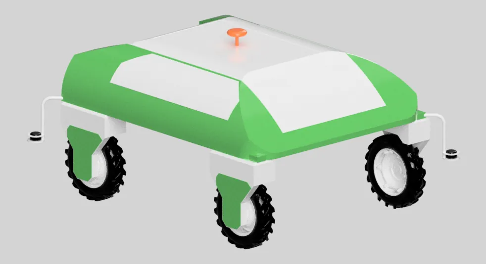
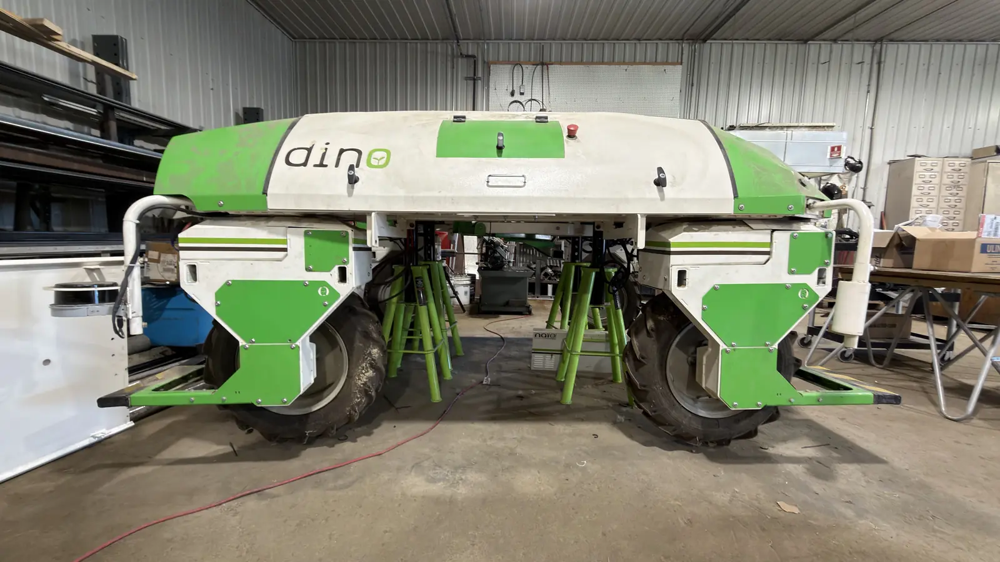
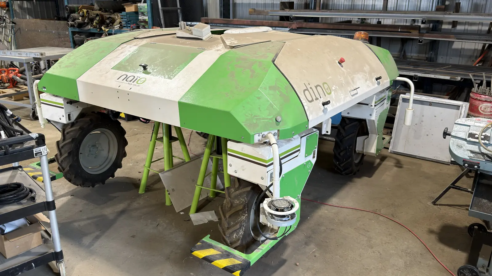
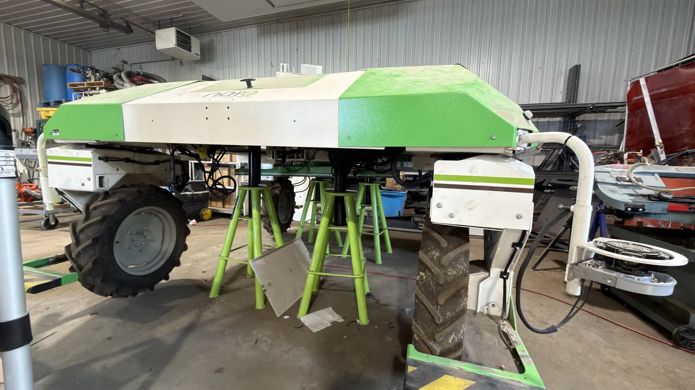
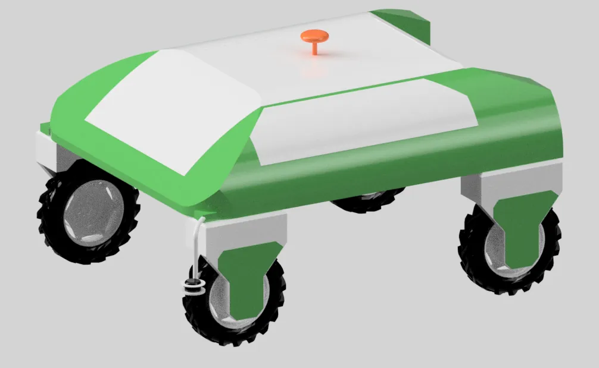
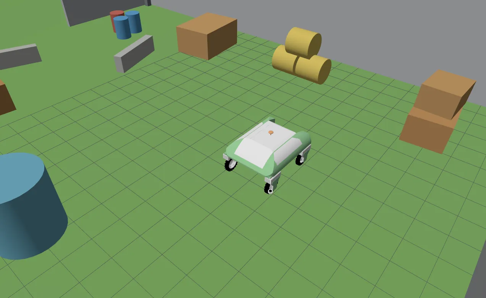
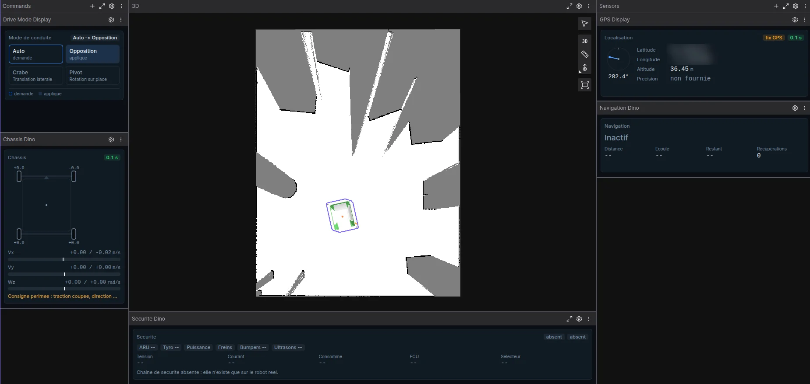

Robotique mobile · Stage de fin d'études
Dino — plateforme de recherche ROS 2
Le Dino de Naïo Technologies est une plateforme de désherbage commerciale, fermée. Tout l'enjeu : reconstituer son fonctionnement pour le rouvrir en robot de recherche programmable, sans toucher à ses sécurités d'origine.
- Période 2026 · 6 mois En cours
- Cadre Stage de fin d'études — INIT Robots, jusqu'en novembre 2026
- Lieu Montréal, Canada
- Mon rôle Ingénieur R&D en robotique mobile
Le contexte
Stage de fin d'études de six mois au laboratoire INIT Robots, à Montréal, mené avec l'appui d'un technicien du laboratoire pour l'intégration matérielle et d'un doctorant en robotique agricole et navigation autonome.
Le Dino est un robot de désherbage mécanique conçu par Naïo Technologies. Comme beaucoup de systèmes industriels, c'est une plateforme fermée : son architecture interne, ses protocoles et ses méthodes de commande ne sont pas documentés pour être modifiés de l'extérieur.
L'objectif est de conserver toute la mécanique et l'électromécanique existantes — qui fonctionnent — et de remplacer la seule couche de commande propriétaire par une architecture ROS 2 ouverte. Une contrainte structure tout le projet : l'automate de sécurité doit rester indépendant du nouveau logiciel. L'ordinateur de bord peut demander un mouvement, jamais empêcher l'automate de couper l'alimentation.
Le déroulé
-
Rétro-ingénierie du bus CAN
Partir du système fini pour en reconstruire l'architecture : schémas électriques, nomenclature, observation du robot, puis écoute du réseau au CAN-sniffer. Comparer les trames à l'arrêt et en mouvement, envoyer des commandes contrôlées, observer la réaction, recouper avec les mesures physiques.
-
Rédaction de l'ICD
Se brancher sur le bus ne suffit pas : encore faut-il comprendre chaque message. L'Interface Control Document consigne, pour chaque trame, l'identifiant, l'émetteur, la longueur, la fréquence, la signification de chaque octet, le facteur d'échelle, l'unité et les codes d'erreur. C'est ce document qui rend le réseau propriétaire exploitable.
-
Passerelle ROS 2 ↔ CAN
Un nouvel ordinateur de bord sous ROS 2 est relié au bus principal via une interface USB-CAN, déployée sur un Raspberry Pi dédié. La passerelle ne décide rien : elle traduit, dans les deux sens, entre le monde informatique et le réseau temps réel du robot.
-
Couche d'abstraction
Aucun nœud ROS 2 n'envoie d'octets CAN directement. Le contrôleur raisonne en grandeurs physiques — une vitesse en rad/s, un angle en degrés — et un driver unique se charge de la conversion. L'ICD reste ainsi centralisé dans un seul paquet, et le passage de la simulation au robot réel ne change qu'une brique.
-
Contrôleur cinématique 4WD–4WS
Le Dino n'est pas un robot différentiel : chaque roue a sa vitesse et son angle propres. Une consigne (vx, vy, ω) doit devenir huit consignes — quatre vitesses de roue et quatre angles de direction. Ce contrôleur ouvre trois modes de déplacement : opposé, crabe et pivot.
-
Jumeau numérique sous Gazebo
Avant tout essai réel, une simulation reprenant le modèle mécanique, les huit articulations, les masses et inerties, les collisions et les capteurs. Elle sert à vérifier ce qui coûte cher à découvrir sur le terrain : signe des vitesses, sens de rotation, conventions d'angle, limites articulaires.
-
Téléopération, capteurs de navigation et arrêt d'urgence sans fil
Pilotage manuel à la manette Bluetooth pour les phases de test et de calibration, intégration et interfaçage des capteurs de navigation — GPS, centrale inertielle, LiDAR — et conception d'un arrêt d'urgence sans fil pour sécuriser les essais. Tant qu'on ne sait pas conduire la machine à la main, on ne peut pas juger ce qu'un algorithme fait à sa place.
-
Barrière logicielle
Avant émission, chaque commande passe par les limites cinématiques, l'état des dispositifs de sécurité, puis les bornes de vitesse, de courant et de position. Elle n'est convertie en trame CAN que si toutes les conditions sont réunies — les protections matérielles d'origine restant, elles, intactes et prioritaires.
-
Localisation et navigation autonome sous Nav2
Les capteurs une fois interfacés, la pile Nav2 prend le relais : localisation du robot, planification puis suivi d'une trajectoire. Le contrôleur 4WD–4WS écrit plus haut devient sa sortie, et la barrière logicielle reste entre les deux.
-
Nouvel ordinateur de bord NVIDIA Jetson
Le calcul embarqué passe sur une carte NVIDIA Jetson, et l'architecture logicielle est adaptée à cette nouvelle base. Toute la conception en couches paie ici : seul le socle change, les nœuds de commande et de navigation, eux, ne bougent pas.
-
Essais sur le robot réel
Définition et réalisation d'une campagne d'essais sur la machine elle-même, pour valider le contrôle, les capteurs et les fonctions de navigation. C'est le terrain qui tranche : la simulation dit ce qui devrait marcher, l'essai dit ce qui marche.
Ce que devient le robot
Au terme du projet, le Dino n'est plus seulement un robot de désherbage : c'est une plateforme expérimentale dotée d'un ordinateur de bord moderne, d'une architecture ROS 2 modulaire, d'une interface CAN documentée, d'un contrôleur 4WD–4WS, d'un jumeau numérique et d'une navigation autonome.
L'intérêt de la démarche tient en une phrase : réutiliser une base mécanique industrielle déjà éprouvée, et ne remplacer que ce qui limitait son usage — le logiciel.